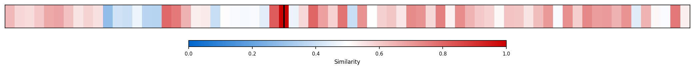
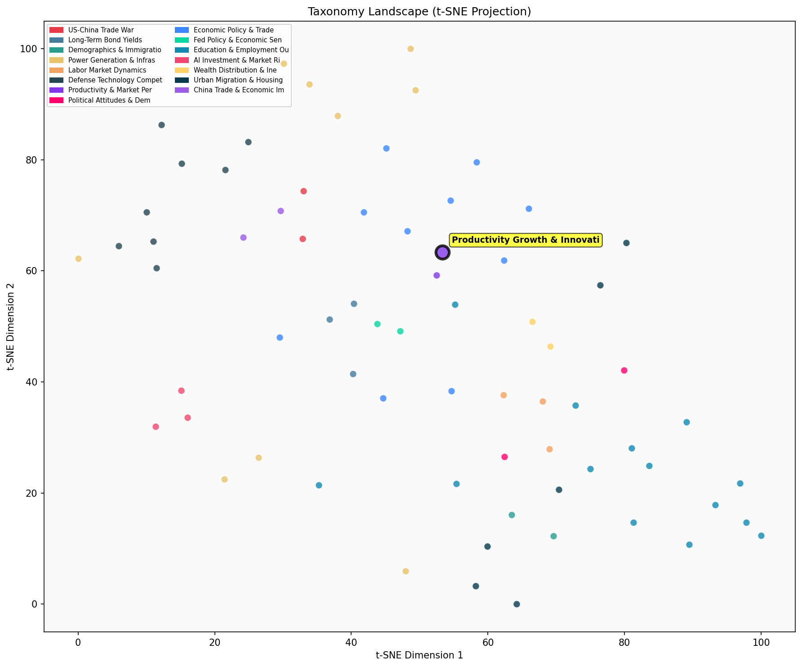

Description
This subcluster examines the drivers and obstacles to productivity growth across sectors, with particular emphasis on technology adoption, innovation patterns, and structural economic changes. Articles typically analyze productivity metrics, total factor productivity (TFP) data, and sectoral performance comparisons, drawing from manufacturing output measures, IT investment statistics, and historical productivity trends. The research spans from quantitative assessments of productivity slowdowns since 2004 to broader examinations of technological disruption, merger waves, and digital transformation impacts. Unlike sibling subclusters focused on market concentration and corporate valuations, this collection prioritizes understanding productivity dynamics through innovation cycles, technology diffusion, and the complex relationship between digital adoption and measurable economic output across industries.
Similarity to All 70 Subclusters
Each cell represents a subcluster. Color intensity shows similarity (blue=low, red=high). Black line marks current subcluster position.
Relationship to Primary Clusters
Average similarity to each of the 15 primary clusters. Larger area = stronger relationship to that cluster.
Taxonomy Landscape
All 70 subclusters positioned by similarity (t-SNE). Current subcluster highlighted with label. Click to enlarge.
Network Connections
Current subcluster at center, connected to related subclusters. Line thickness = similarity strength.
Most Representative Articles
-
1. US productivity growth has slowed since 2004, with adjustments to IT-related hardware, software, and
-
2. Investment in IP products, such as software & R&D, has surpassed 4% of GDP for the first time since
-
3. Missing growth from creative destruction accounts for ~1/5 of TFP growth in the US from 1983-2013, w
-
4. US capital spending has rebounded strongly since the Covid-19 downturn, with private non-residential
-
5. Rising market concentration does not inherently lead to reduced competition or hinder productivity g
Edge Cases (Boundary Articles)
-
1. Americans, ages 18–24, spend more than three hours a day on social media; nearly an hour of it on TiThis article is borderline because while it mentions technology adoption (TikTok usage) which could relate to productivity impacts, it primarily focuses on social media consumption patterns among young Americans rather than examining actual productivity growth drivers, innovation dynamics, or structural economic changes. The content is more aligned with behavioral and demographic trends than with the economic productivity analysis that defines this cluster.
-
2. 71% of American teenagers aged 13-17 visit Alphabet’s YouTube daily, and 58% visit ByteDance’s TikToThis article is borderline because while it mentions major tech platforms (YouTube, TikTok) that could relate to technology adoption and digital innovation dynamics, the focus is purely on teenage usage patterns rather than productivity impacts, innovation drivers, or economic growth effects. The data about youth social media consumption habits is more naturally aligned with behavioral and social trends than with productivity and innovation analysis.
-
3. 30% of American and British adults consume no conventional news media. @jburnmurdoch argues social mThis article is borderline because while it mentions technology adoption (social media's "pivot to video"), its primary focus is on media consumption patterns and their political implications rather than productivity growth or innovation dynamics in the economic sense. The content is more closely aligned with political preference analysis, as evidenced by its higher similarity to the "Gender & Age Political Preference Gaps" cluster, since it discusses how different media formats favor different political ideologies.
Original Dendrogram